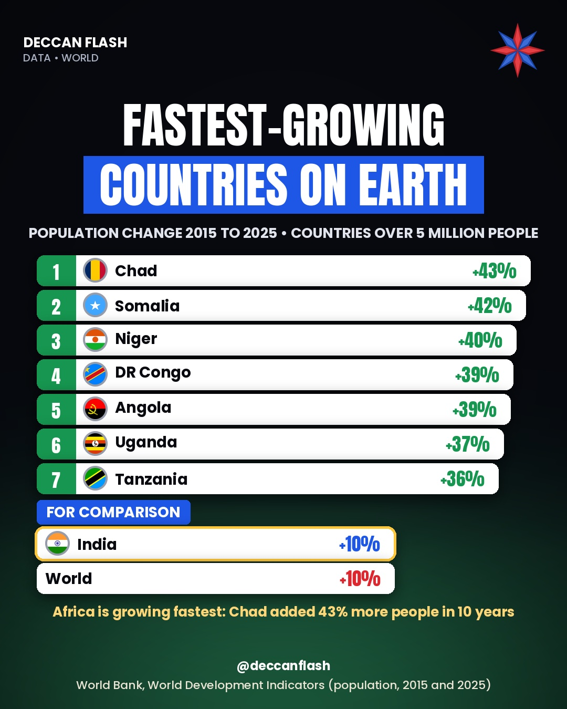

Population · World
The fastest-growing countries on Earth
Chad grew from 14.6 million to 21.0 million people in ten years, the fastest of any country with over 5 million people. The top seven are all in Africa. India grew 10.2%, almost exactly the world's 10.4%.
Population change, 2015 to 2025
Countries with more than 5 million people in 2025. India and the world shown for comparison.
The ranking
| # | Country | 2015 (mn) | 2025 (mn) | Change |
|---|---|---|---|---|
| 1 | Chad | 14.6 | 21.0 | +43.4% |
| 2 | Somalia | 13.8 | 19.7 | +42.4% |
| 3 | Niger | 19.9 | 27.9 | +40.0% |
| 4 | DR Congo | 81.0 | 112.8 | +39.2% |
| 5 | Angola | 28.2 | 39.0 | +38.6% |
| 6 | Uganda | 37.5 | 51.4 | +36.9% |
| 7 | Tanzania | 52.0 | 70.5 | +35.6% |
| – | India | 1,328.0 | 1,463.9 | +10.2% |
| – | World | 7,441.1 | 8,215.4 | +10.4% |
Mali is 8th at +35.5%, just behind Tanzania. India added about 13.6 crore people (135.8 million) over the decade, far more than any of these countries in absolute numbers.

Quick answers
Which country's population is growing fastest?
Among countries with over 5 million people, Chad: +43.4% from 2015 to 2025, followed by Somalia (+42.4%) and Niger (+40.0%).
Is India's population growing faster than the world's?
No, about the same. India grew 10.2% from 2015 to 2025 (1,328 million to 1,464 million); the world grew 10.4% (7.44 billion to 8.22 billion).
Which is the most populous country?
India. In World Bank data for 2025 India has 1,464 million people and China 1,407 million.